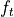
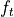
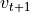

Inverse Dynamics (with Contact)¶
It’s often useful to be able to reconstruct the forces/torques necessary to create an observed motion.
To learn about how to do this, let’s recall the definition of a timestep (in matrix notation):
Here  is the mass matrix, and
is the mass matrix, and  is the coriolis force vector, and  is the control force applied.
is the coriolis force vector, and  is the control force applied.
“Plain Vanilla” Inverse Dynamics¶
The basic inverse dynamics problem is to solve for necessary to get a given  at the next timestep. Rearranging the timestep equation, we end up with:
Note that another name for is acceleration, which we can denote  .
.
In its simplest form, when dealing with a robot arm rigidly attached to a base on the ground, the above equation solves the problem.
This can be solved in code by calling Skeleton.getInverseDynamics(next_vel):
control_forces = robot.getInverseDynamics(desired_next_vel)
This equation doesn’t respect joint force limits, because it’s solving a linear system of equations which (if is full rank) has only one solution.
Here we run into problems. Suppose you’re analyzing a skeleton that’s not firmly attached to the ground (maybe a walking robot, or a human). The root joint of such a skeleton is usually a FreeJoint, which encodes the 6 degrees of freedom (3 rotation, 3 translation) to allow the root of the skeleton to move freely relative to the origin.
(For more intuition about these root joints, re-read Understand Worlds and Skeletons). The problem is that getInverseDynamics(...) will apply forces to the root joint!
That’s very unrealistic. It’s kind of like attaching your walking robot to an imaginary crane, that’s able to exert arbitrary forces and torques at their root joint. It’d be better if we could somehow ensure that the forces were coming through one or both feet in contact with the ground.
Inverse Dynamics with One Contact¶

Solving that problem is the goal of getContactInverseDynamics(...). This method will only work if your robot’s root joint is a FreeJoint (or a FreeEulerJoint) so that the robot is moving freely through space.
Assuming that’s the case, you can ask for a set of joint torques that the robot’s motors could actually achieve (leaving the first 6 degrees of freedom un-actuated), and the necessary contact force at the specified contact body.
In code, that looks like this:
result = robot.getContactInverseDynamics(desired_next_vel, right_foot)
control_forces = result.jointTorques
right_foot_contact_force = result.contactWrench
If you’re not curious about the math, you can skip to the next section. For the curious-minded, read on:
We’d like to prevent the inverse dynamics solver from applying any un-physical forces at the root (f_t[0:6] == 0), which will add 6 equations to our linear system.
That by itself would over-constrain our system, and make it unsolvable, because we’d have  variables and equations (assuming is the number of degrees of freedom for our skeleton).
variables and equations (assuming is the number of degrees of freedom for our skeleton).
We’ll resolve that issue by allowing the system to solve for any arbitrary 6-degree-of-freedom “wrench” (that’s a 3-dof force and a 3-dof torque) at the contact body. That adds 6 new variables, bringing us to variables and equations. This is now a solvable system, so let’s proceed to solve it (efficiently).
If we introduce the contact wrench  and the contact body’s Jacobian , our forward dynamics equation is:
and the contact body’s Jacobian , our forward dynamics equation is:
Our inverse dynamics equation now looks like solving for and in the following equations:
![f_t[0:6] = 0](_images/math/a711b9bccbf11683eaf7fe7e63ccc85f111bd724.png)
We can solve this in stages. We know that the first 6 entries of the equation must be zero, so that’s 6 equations and 6 unknowns, and allows us to solve for :
Then we can use , and plug it back into our main equation:
As a sanity check, the first six entries of should be tiny tiny values, and are only non-zero because computers do finite precision arithmetic. We can then safely set them to zero, and return the whole batch.
Inverse Dynamics with Multiple Contacts¶
What if both our robot/person has more than one foot touching the ground? Following the same strategy outlined in the last section, now we see that our equations no longer have a unique solution.
With  feet touching the ground, we have equations and variables. That means our system is under-constrained for , and there are lots (infinitely lots, in fact) of potential solutions.
feet touching the ground, we have equations and variables. That means our system is under-constrained for , and there are lots (infinitely lots, in fact) of potential solutions.
We can choose between these ambiguous solutions in several ways:
- We can pick the nearest set of contact forces to some initial guess
- We can minimize the torques on the contact forces
- We can try to pick smooth contact forces over time, if we’re solving multiple timesteps at once
To pick the nearest set of contact forces to some initial guess, expressed as a list of 6-vectors body_wrench_guesses:
result = robot.getMultipleContactInverseDynamics(next_vel, contact_bodies_list, body_wrench_guesses)
control_forces = result.jointTorques
first_foot_contact_force = result.contactWrench[0]
second_foot_contact_force = result.contactWrench[1]
To pick the set of contact forces that minimize the torques at each foot (on the theory that contacts like to produce linear forces, and torques are kind of “imperfections” in the solution), just leave out the guesses:
result = robot.getMultipleContactInverseDynamics(next_vel, contact_bodies_list)
control_forces = result.jointTorques
first_foot_contact_force = result.contactWrenches[0]
second_foot_contact_force = result.contactWrenches[1]
To solve for inverse dynamics over time, assuming you’ve got a matrix of positions where each column represents one timestep’s position vector:
result = robot.getMultipleContactInverseDynamicsOverTime(positions, contact_bodies_list, smoothingWeight=1.0, minTorqueWeight=1.0)
n = 0 # some timestep
step_n_control_forces = result.jointTorques[n,0]
step_n_first_foot_contact_force = result.contactWrenches[n][0]
step_n_second_foot_contact_force = result.contactWrenches[n][1]
You can control how the solution trades off between smoothness and minimizing torques with the weighting arguments, smoothingWeight and minTorqueWeight.